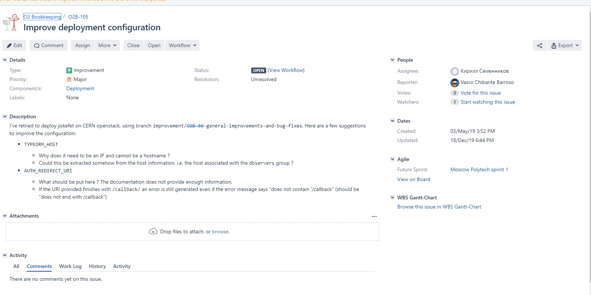
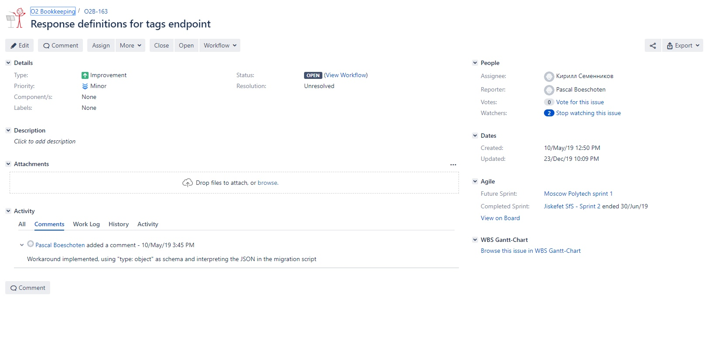

Осенний семестр 2019 года
Московский Политех начинает сотрудничество с Университетом прикладных наук Амстердама для совместной работы над проектами Европейского Центра ядерных исследований ЦЕРН (CERN). В ЦЕРН идёт работа над несколькими долгосрочными экспериментами. Один из них: ALICE. На весенний семестр студентам предлагается реализовать веб-систему сбора и демонстрации статистических данных, накапливающихся в удалённой системе и доступных по REST API. При реализации системы потребуется сотрудничать с представителями Университета прикладных наук Амстердама и их студентами на английском языке. Платформа: Slack. Возможно участие в видеоконференциях по Skype. Основной упор на первом этапе проекта делается на визуальную составляющую. После успешного прохождения проекта возможно расширение сотрудничества и работа над более сложными и интересными задачами. Следующие этапы сотрудничества предполагают разработку сайтов и серверных приложений. В будущем предполагается расширение сотрудничества и стажировки. Требуемые навыки от команды: HTML, CSS, Javascript, библиотеки визуализации данных для Javascript, REST API, дизайн, git. Проект открыт для всех студентов Факультета информационных технологий.
Семенников Кирилл Алексеевич 181-351 - Team leader
Шипилова Анастасия Сергеевна 181-351 - разработчик
Всего нашей командой было обработано 2 задачи. Они указаны в приложенных изображениях.
Задание 1: Улучшение конфигурации развертывания (Improve deployment configuration). Ответственный: Шипилова А.С.
Задание 2: Определение ответов для тегов endpoint (Response definitions for tags engpoint) Ответственный: Семенников К.А.


18 ноября - разбиение на команды
ноябрь-декабрь - развертывание системы jiskefet.api, jiskefet.ui
13 декабря - анализ поставленной задачи
15 декабря - консультация с куратором
16 декабря - дополнительная консультация с заказчиком
декабрь - разработка CUI для конфигурации Yaml , разработка services
21 декабря - консультация с куратором,refactoring
28 декабря - консультация с куратором,refactoring
декабрь-январь - разработка GUI
17 января - финальная консультация с куратором
Семенников К.А.
4 часа - развертывание системы jiskefet.api под ОС windows
6 часов - развертывание системы jiskefet.ui под ОС windows
6 часов - анализ структуры DB, Services, controlers
10 часов - написание кода и написание services.
3 часа - автотесты для Git
2 часа - сode review
Шипилова А.С.
7 часов - развертывание системы jiskefet.api
2 часа - анализ системы
8 часов - разработка CUI версии утилиты для конфигурации корректных Yaml.
2 часа - refactoring кода
3 часа - разработка дизайна GUI. подбор цветов.
10 часов - реализация GUI версии утилиты для конфигурации корректных Yaml.